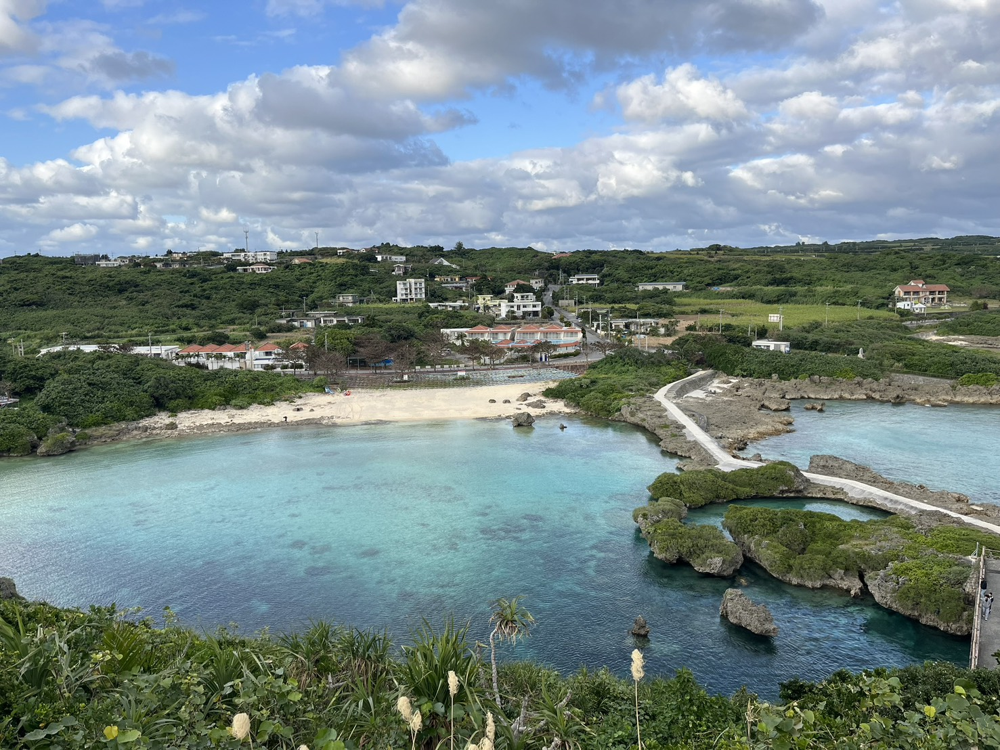
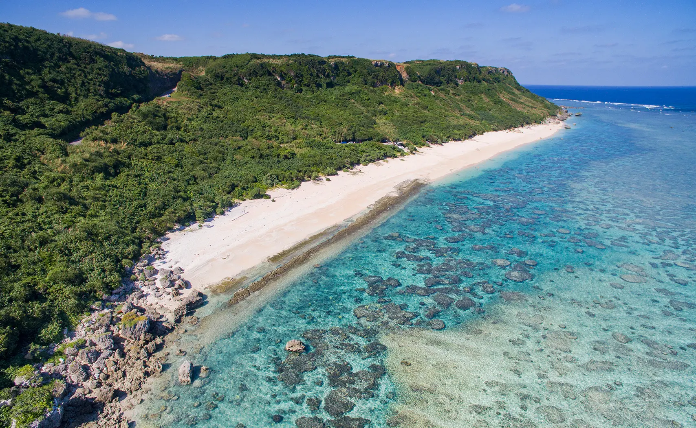
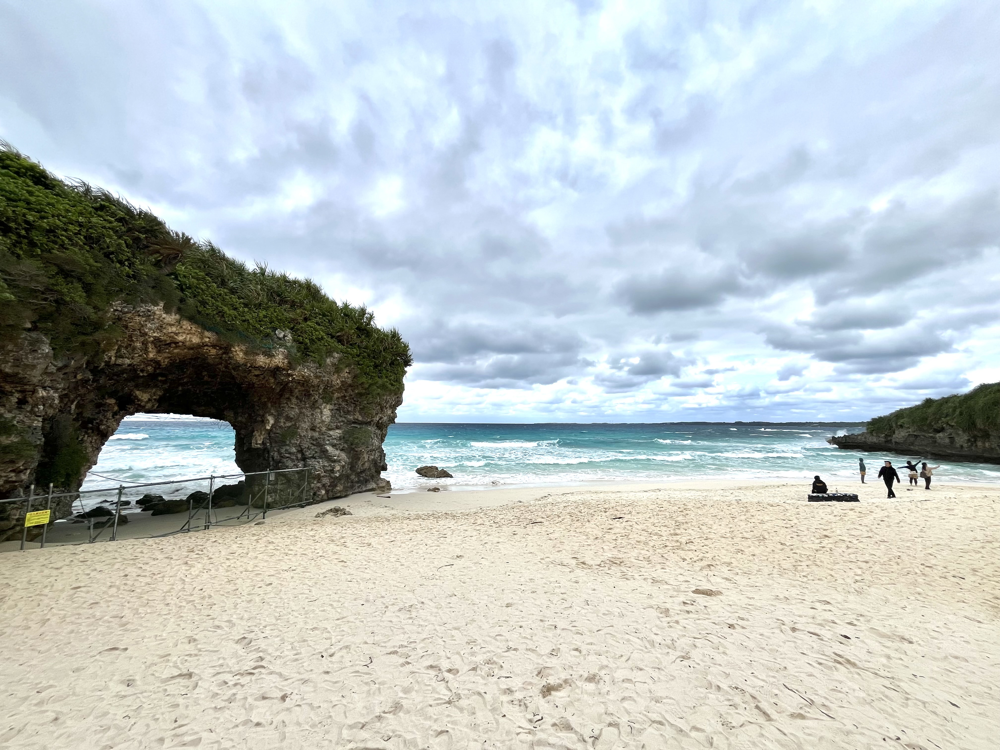
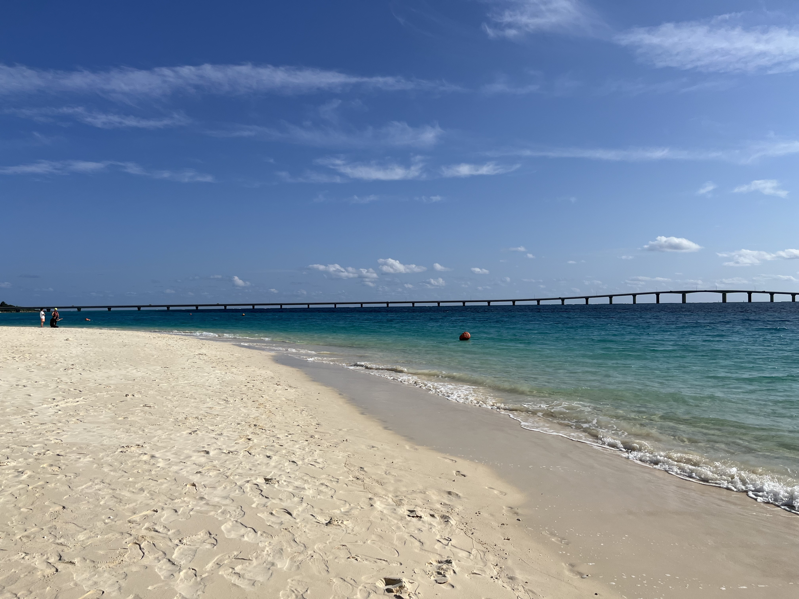

美しい海
美しいエメラルドグリーンの海で囲まれた宮古島には、数多くのビーチがあります。
どこもとても良い場所ですが、今回はそのうちの5つを紹介します！
訪れた際にはぜひ参考にしてみてくださいね。
目次
インギャーマリンガーデン

天然の入り江を生かしたインギャーマリンガーデンは、波穏やかでスキューバダイビングの講習がよく行われています。
また、陸上は散策コースなどもあり一番上の休憩所からは素晴らしい景色を眺めることが出来ます。
名だたる人気ビーチが集中する宮古島でも、一風変わった個性を放ったスポットです！
吉野海岸

シュノーケリングポイントとして大人気のビーチです！
波打ち際付近から広がる色とりどりのサンゴと魚達はまさに竜宮城を思わせます。
沖合いにリーフが発達しているために非常に波穏やかで海水浴に適していますが、潮の干満の影響を受けやすいビーチでもあります。
新城海岸
吉野海岸と同様に元気なサンゴとカラフルな熱帯魚達に出会える人気のビーチです！
県道から海岸までの道も吉野海岸ほど狭い道ではないので比較的楽にたどりつく事が出来ます。
フィンやマスクなどはビーチ沿いのマリンショップでレンタルできるので手ぶらで行っても楽しめます！
砂山ビーチ

隆起珊瑚礁で出来た洞穴と白い砂浜に青い海、ガイドブックでも必ず掲載されているほどの代表的なビーチ。
名前の通り小さな砂山を登った先に広がる素晴らしい景色は目を見張るほどです。
宮古島市の中心である平良の市街地から約4kmと近いこともあり、地元住民だけでなく観光客にも親しまれています。
与那覇前浜

「東洋一の白い砂浜」とも言われる宮古島を代表する美しいビーチ。
真っ白な砂浜が延々と7kmも続くビーチで正面には来間島を望み、隣接するホテルなどがリゾート気分を満喫させてくれます。
さまざまなマリンスポーツが楽しめる与那覇前浜ビーチは、トライアスロン宮古島大会のスタート地点にもなっています。
まとめ
いかがでしたか？
それぞれのビーチに特徴があることが知れたのではないでしょうか。
一部のビーチではウミガメも見ることができるので、ぜひ来てください！
問い合わせ
ご覧いただきありがとうございます！
宮古島のことで質問などがありましたらお気軽にお問い合わせください！